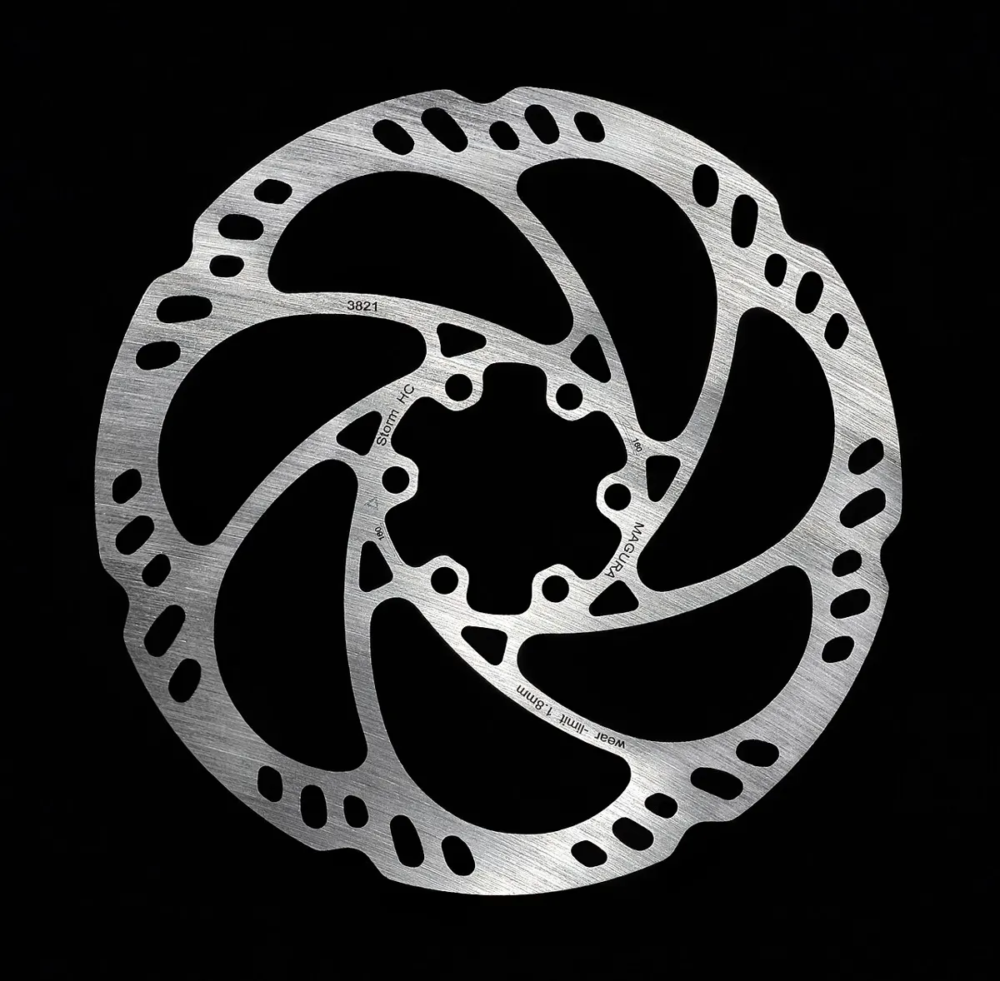

Инструкция · Тормоза
Прокачка тормозов Magura (Royal Blood)
Гидравлические тормоза Magura (дисковые серии MT и гидравлические ободные HS) заправлены минеральным маслом Magura Royal Blood. Magura предписывает использовать только его. Прокачка — шприцем снизу вверх, от суппорта к ручке; точный порядок, положение ручки и переходники — в руководстве Magura для вашей модели (magura.com).

⚠ Важно
- Только Royal Blood: Magura не допускает DOT и другие жидкости.
- На ободных гидравлических тормозах HS процедура и переходники свои — смотрите руководство именно к HS.
- Моменты затяжки винтов прокачки маленькие — перетянутый винт срывает резьбу в пластиковом или алюминиевом корпусе.
Пошагово
- 1Подготовьте: Royal Blood, набор Magura (шприц со шлангом и штуцером, ёмкость или второй шприц для ручки), заглушку прокачки, ключи по руководству вашей модели, ветошь, перчатки, изопропиловый спирт.
- 2Снимите колесо и колодки, вставьте заглушку прокачки (для MT — транспортировочный/прокачочный вкладыш Magura).
- 3Установите ручку так, чтобы бачок был горизонтален. Снимите винт прокачки на ручке и подключите сборную ёмкость или шприц по руководству.
- 4Заполните шприц маслом без пузырьков. Снимите винт прокачки на суппорте и вкрутите штуцер шприца.
- 5Медленно продавливайте масло снизу вверх до тех пор, пока в ёмкости на ручке не пойдёт масло без пузырьков. Постукивайте по шлангу и суппорту.
- 6Закройте порт ручки винтом прокачки (масло должно стоять «шапкой», чтобы не захватить воздух), затем выкрутите штуцер шприца и закройте порт суппорта.
- 7Протрите всё спиртом, установите колодки (облитые маслом — заменить) и колесо. Проверьте точку срабатывания и плотность ручки.
- 8Проведите приработку и проверьте тормоз на малой скорости.